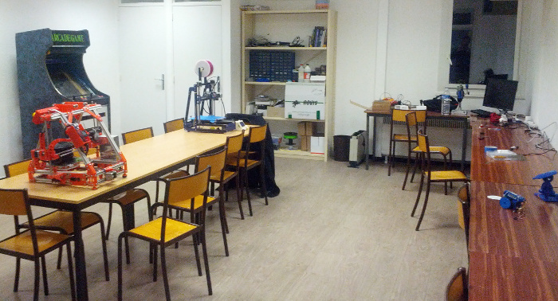

Soirée #geekbidouille de Janvier
Sébastien NEDJAR
Soirée #geekbidouille de Janvier

- Actualités
- Présentation des Hacks de l’été de Nicolas
- Présentation du projet que Xavier a proposé lors d’un concours d’innovation chez Sopra Group.
- Présentation “indy dans l’audela” par BenJ
- Démonstration du Egg Bot vraiment DIY de Laurent.
- Ouverture de notre local à l’IUT.
- Equipement du L.A.B.
- Futur local.
- Formation des ERIC du Pays d’Aix
Ouverture de notre local à l’IUT

- Début des permanences tous les Mardi et Mercredi de 17h à 20h.
- Moments de rencontre et d’échange.
- Progression des effectifs.
- De plus en plus de bidouille et de désordre.
- Réunion du L.A.B.
- Les étudiants viennent pour bidouiller pendant leur temps libre.
- Occupation comme un espace de travail partagé.
Ouverture de notre local à l’IUT
- L’élaboration du cahier des charges de la première vague.
- D’ici Mars nous devrions recevoir la première vague de matériel (Fraiseuses, Plotter de découpe, Découpe Laser, Station de travail, …).
- Plusieurs machines et outils seront mis à disposition d’autres associations pour permettre
un large accès à la fabrication numérique.
- Recyclage d’un lot d’imprimantes de la CPA pour alimenter nos stock de pièces pour les imprimantes 3D.
- Don d’Atmel de 40 cartes de développement pour les ateliers “Microcontroleurs ARM” et pour les enseignement à l’IUT.
- Don d’un stock important de composants électroniques par un membre.
- La CPA a voté l’acquisition du local situé à la rue des bœufs.
- Début du travail de définition du programme avec la direction des bâtiments.
- Ouverture prévue en 2015.
- Rencontre début janvier pour programmer la première séquence de formation.
- 10 Jours de formation réparties de Janvier à Avril sur l’impression 3D
- Le but de la formation est d’autonomiser les ERIC tant sur le plan technique que de la médiation.
- Les machines choisies sont des MendelMax 2 pour disposer d’un parc homogène.
- Hacker Garten du MarsJug
- Début du projet Borély Hacking avec Design The Future Now.
- Souk des sciences à Aix.
- Début d’atelier autour des microcontroleurs ARM.
- Formation Arduino.